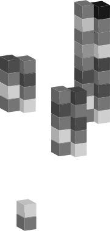
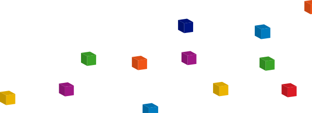

<!--

=========================================================
* Swipe - Mobile App One Page Bootstrap 5 Template
=========================================================

* Product Page: https://themesberg.com/product/bootstrap/swipe-free-mobile-app-one-page-bootstrap-5-template
* Copyright 2020 Themesberg (https://www.themesberg.com)

* Coded by https://themesberg.com

=========================================================

* The above copyright notice and this permission notice shall be included in all copies or substantial portions of the Software. Contact us if you want to remove it.

-->
<!DOCTYPE html>
<html lang="en">


@@include('./_head.html', {
"path": ".",
"title": "Niște Orășeni - Inițiativa pentru susținerea migrației din urban în rural"
})


<body>
@@include('./_navigation.html', {
"path": ".",
"classes": "navbar-light navbar-theme-secondary"
})

<!-- Hero -->
<section class="section-container">
    <div class="before-image"></div>
    <div class="yellow-top visible-sm"></div>
    <div class="orange-top visible-sm"></div>
    <div class="blue-right visible-sm"></div>
    <div class="green-left visible-sm"></div>
    <div class="yellow-bottom visible-sm"></div>
    <div class="wrapper">
        <div class="row">
            <div class="content-about">
                <div class="visible-sm">
                    <h1>Inițiativa pentru susținerea migrației din urban în rural</h1>
                    <a href="">Vizitează-ne pagina de Facebook!</a>
                </div>
                <p>Am pornit această inițiativă din dorința de a oferi celor ce doresc să părăsească orașul în favoarea satului un
                    cadru amplu, documentat, o privire de ansamblu asupra traiului în mediul rural, în armonie cu natura și localnicii,
                    precum și în parteneriat cu primăriile și grupurile de acțiune locală. </p>
                <p>
                    Pentru aceasta am constituit un think-tank format din specialiști în sociologie, antreprenoriat, educație, arhitectură, mediu și calitate a vieții.
                </p>
                <p>
                    De asemenea, am luat în considerare și resursele necesare relocării, oferind celor ce aleg migrația spre sat resurse
                    financiare de achiziționare de locuințe, de terenuri agricole și de demarare a unor activități antreprenoriale.
                </p>
                <p>
                    Am ales să începem proiectul nostru cu localitatea Slătioara, din județul Vâlcea, identificând în aceasta mediul
                    propice relocării, date fiind infrastructura existentă și oportunitățile pe care le oferă.
                </p>
                <p>
                    Rezultatul final al cercetării noastre va fi disponibil pe site, site ce va fi populat cu informație pe măsura desfășurării acțiunilor
                    think-tank-ului în comuna Slătioara.
                </p>
                <p> Între timp, vă invităm să ne urmăriți pe <a href="">pagina de Facebook.</a></p>
                <p>Pe curând!</p>

            </div>
        </div>
    </div>
    <div class="after-image"></div>
</section>

@@include('./_scripts.html', {
"path": "."
})
</body>

</html>